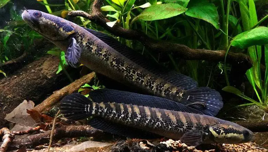

Systématique
- Ordre : Anabantiformes
- Famille : Channidae
- Genre : Parachanna
- Espèce : P. africana
- Auteur : Steindachner, 1879

Parachanna africana est le plus petit membre du genre Parachanna. Originaire d'Afrique de l'Ouest, il possède un corps allongé et cylindrique caractéristique des "snakeheads". Sa livrée est particulièrement reconnaissable grâce à une série de 8 à 11 marques sombres en forme de chevrons (ou "V") le long des flancs.
Il atteint généralement une taille de 25 à 32 cm. Sa tête est aplatie et recouverte de larges écailles, lui donnant cet aspect reptilien. Contrairement à son cousin P. obscura, il reste plus compact, ce qui facilite légèrement sa maintenance en aquarium par rapport aux géants du genre. Sa coloration de base varie du gris clair au brun ocre, avec des nageoires souvent ornées de petits points sombres.
Comme tous les Channidés, c'est un prédateur à l'affût possédant un organe respiratoire accessoire primitif (organe suprabranchial) lui permettant de respirer l'air atmosphérique. Il doit impérativement avoir accès à la surface. C'est un poisson discret qui passe une grande partie de la journée caché dans le décor ou sous la végétation flottante, devenant plus actif au crépuscule.
En aquarium, il est territorial et peut se montrer agressif envers ses congénères. Il est préférable de le maintenir seul ou en couple formé (nécessitant une vigilance accrue lors de la mise en présence). C'est un sauteur hors pair capable de se faufiler par le moindre interstice ; un couvercle lourd et parfaitement ajusté est obligatoire.
Mode : Ovipare, pondeur sur substrat ou parmi la végétation de surface.
La reproduction est rarement enregistrée en captivité mais reste possible. Les œufs, plus légers que l'eau, flottent à la surface et sont souvent regroupés dans la végétation flottante. Le mâle assure la garde des œufs et des larves.
Le déclenchement de la ponte semble lié à des variations de température (hausse) et de paramètres d'eau (reprise de changements d'eau après une période de repos), simulant la saison des pluies. Les jeunes juvéniles présentent souvent une bande noire latérale allant du museau à la queue, livrée qu'ils perdront en grandissant au profit des chevrons adultes.
Dimorphisme sexuel : Difficile à établir visuellement. Les femelles adultes sont généralement plus massives avec un abdomen plus large. Les mâles peuvent présenter une tête légèrement plus large.
Espérance de vie : 10 à 15 ans en aquarium.
Parachanna africana se rencontre principalement dans les cours inférieurs des fleuves du Sud du Bénin (rivière Ouémé) et du Nigeria (delta du Niger, rivière Cross).
Il affectionne les zones calmes des rivières, les marécages et les forêts inondées où la végétation est dense et l'eau souvent ambrée par les tanins. Son habitat naturel est caractérisé par des eaux douces, légèrement acides et peu profondes, offrant de nombreuses cachettes naturelles.
Répartition

Origine naturelle :
- Bénin (Sud, fleuve Ouémé).
- Nigeria (Sud, Delta du Niger jusqu'à la Cross River).
- Signalé au Togo ; présences au Cameroun et Gabon incertaines.
Statut : Moins fréquent dans le commerce que P. obscura, il est parfois importé par erreur sous ce nom.
Paramètres de maintenance
Température : 20 à 25 °C (certaines sources indiquent jusqu'à 28 °C, mais une eau tempérée est préférable).
pH : 5,5 à 7,5.
GH : 3 à 15 °dGH (eau douce à moyennement dure).
Courant : Faible.
Volume conseillé : Minimum 300-450 L pour un individu ou un couple formé.
Régime alimentaire
Régime : Carnivore / Piscivore.
Prédateur embusqué se nourrissant de petits poissons, d'insectes et de crustacés dans la nature.
En aquarium, il accepte les vers de terre, les crevettes, les moules et la chair de poisson. L'acclimatation aux nourritures sèches est difficile et non recommandée comme alimentation principale. Éviter les viandes de mammifères (cœur de bœuf) qui nuisent à son système digestif.